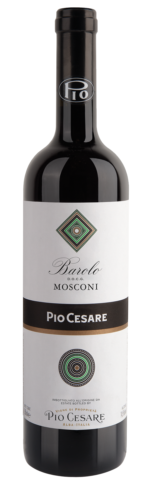

Il Barolo affonda le sue radici nell’Ottocento, e Pio
Cesare è uno dei suoi interpreti più storici. Questo
vino straordinario nasce da uve Nebbiolo selezionate
nei migliori cru delle Langhe.
Profumi di rosa appassita, tartufo e liquirizia, in
bocca è potente e raffinato allo stesso tempo. Perfetto
per piatti importanti a base di carne, selvaggina e
formaggi erborinati.
Il Barolo di Pio Cesare rappresenta l’anima più
classica e autentica delle Langhe. Lungo affinamento
n botte grande e un’attenta selezione in vigna
regalano struttura, eleganza e capacità di evolvere per
decenni.
È un vino che parla la lingua del tempo, della terra e
delle mani che la conoscono profondamente. Ogni
sorso è un viaggio nella storia del vino italiano.
